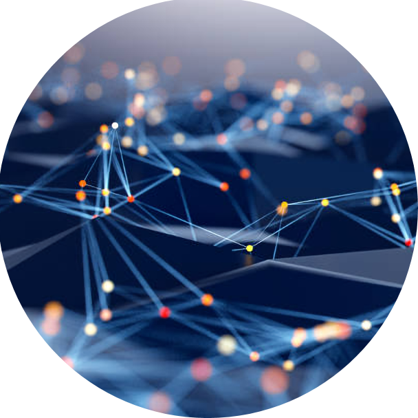
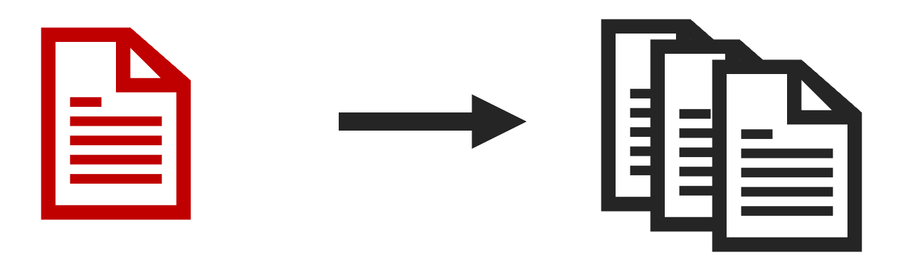
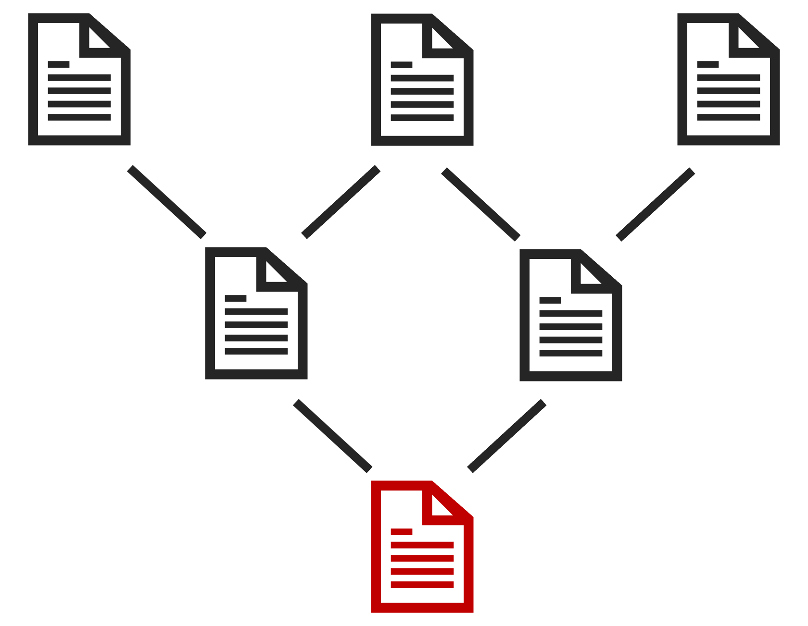
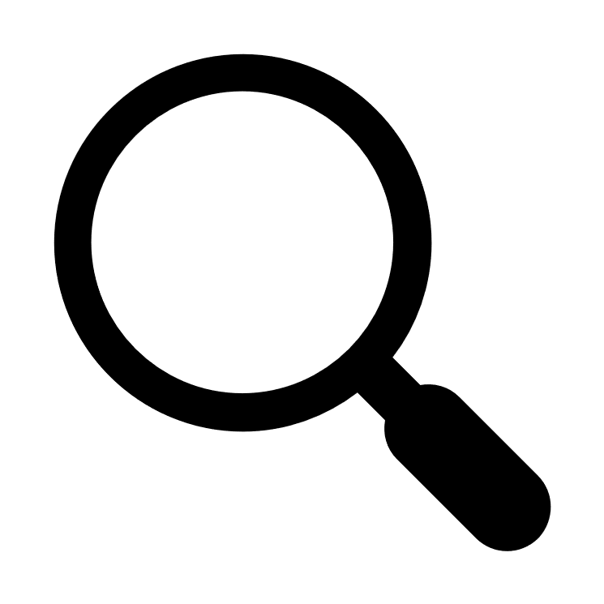

Information source
Une information contenue dans un article pourrait servir de base à plusieurs articles et structurer une partie du savoir dans un domaine donné.

Le deuxième axe du projet consiste à ne plus présenter les articles scientifiques comme des textes isolés, mais comme des éléments d’un réseau de connaissances. Chaque article serait relié aux textes qu’il cite, aux textes qui le citent et aux concepts qu’il mobilise.
Dans cette plateforme, les articles ne seraient pas indépendants les uns des autres. Chaque publication reposerait, en partie, sur des informations issues d’autres travaux. Cette dépendance créerait un réseau où les contenus seraient liés par leurs références.
Dès lors, la validité d’un article ne serait jamais entièrement isolée : elle dépendrait aussi de la solidité des informations qu’il mobilise. Lorsqu’une information importante serait corrigée, nuancée ou invalidée, cette modification pourrait affecter l’ensemble des articles qui s’y appuient.

Une information contenue dans un article pourrait servir de base à plusieurs articles et structurer une partie du savoir dans un domaine donné.
Les publications qui mobiliseraient cette information en hériteraient partiellement, par le biais des références, ce qui créerait un lien de dépendance entre elles.
Une correction apportée à une information pourrait entraîner automatiquement des suggestions de réévaluation des articles qui en dépendraient, directement ou indirectement.

Les articles les plus mobilisés deviendraient des points stratégiques, car leur influence s’étendrait à un grand nombre de publications. Cette centralité reposerait sur le nombre de chaînes de références, directes et indirectes, qui convergeraient vers eux.
Au-delà des références, la plateforme pourrait aussi permettre de suivre l’histoire des concepts. En cliquant sur un concept, l’utilisateur pourrait consulter son origine, ses transformations et les différents contextes dans lesquels il est mobilisé.
Cette fonctionnalité serait particulièrement utile pour la recherche en sciences humaines, car les concepts y évoluent beaucoup et peuvent changer de signification selon les auteurs qui les mobilisent et les périodes dans lesquelles ils sont utilisés.
Il serait possible de cliquer sur un concept afin d’identifier le moment et le contexte de son apparition.
Les transformations du concept ou de sa signification à travers les différentes publications pourraient aussi être retracées, de même que les moments clés de ces transformations.
Le système pourrait mettre en évidence les concepts qui sont utilisés dans un sens différent de leur usage prévu si le changement de sens n'a pas été explicité lors du passage d'une publication à une autre.
En somme, les relations entre les articles pourraient être représentées sous forme d’arborescence, où chaque publication s’inscrirait dans un réseau structuré de dépendances. Cette représentation ne viserait pas seulement à situer les articles les uns par rapport aux autres, mais à rendre visible l’organisation interne du savoir et les liens qui en assurent la cohérence.
Certains articles constitueraient des points d’ancrage du réseau, à partir desquels se déploieraient différentes branches. Leur solidité dépendrait de leur capacité à résister aux critiques et à demeurer pertinents dans le temps, ce qui contribuerait à former des structures relativement stables du savoir.
À l’inverse, certaines branches pourraient apparaître plus fragiles, dans la mesure où elles reposeraient sur des hypothèses contestées, des interprétations discutables ou des cadres théoriques moins stabilisés. La remise en question d’un article central pourrait alors entraîner la réévaluation, voire l’abandon, des publications qui en dépendent.
Certains articles joueraient un rôle de fondation en soutenant un grand nombre de travaux, ce qui en ferait des éléments centraux du réseau.
Les publications s’organiseraient en ensembles cohérents, correspondant à des développements spécifiques à partir de certaines idées ou résultats initiaux.
Les branches reposant sur des bases plus incertaines seraient plus susceptibles d’être critiquées, transformées ou abandonnées.
Le travail des utilisateurs consisterait à renforcer certaines structures, à en corriger d’autres et à redistribuer l’attention portée aux différentes parties du réseau.

Cette intégration dynamique pourrait transformer profondément l’acte de recherche. Il ne s’agirait plus seulement de trouver un article, mais de naviguer dans un réseau de connaissances, de suivre des idées et d’en analyser les transformations. La plateforme pourrait ainsi devenir un outil permettant de rendre visibles les relations qui structurent la production du savoir scientifique.